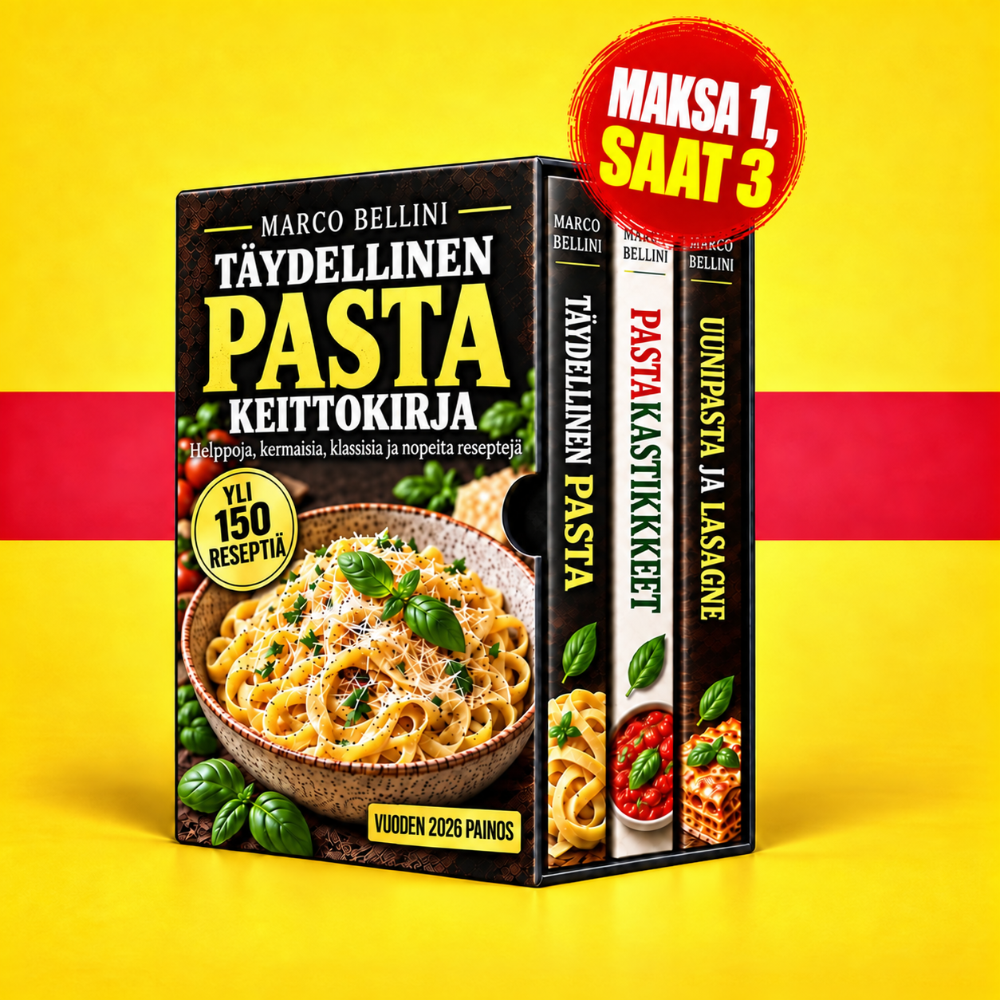

Pastakokoelma
Tervetuloa pastakokoelmasi pariin. Tutustu kolmeen keittokirjaasi, löydä pasta-, kastike- ja uuniruokia ja valitse seuraava reseptisi.
📖 3 keittokirjaa PDF-muodossa🍝 Pastaa, kastikkeita ja lasagnea💬 Tuki▶ Videot
